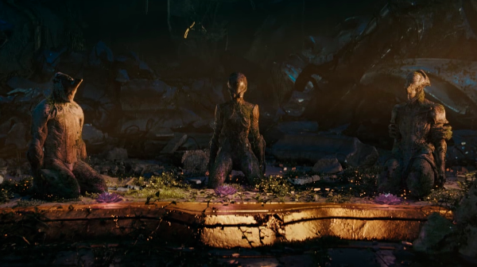
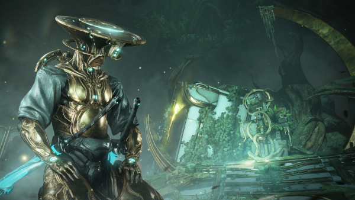
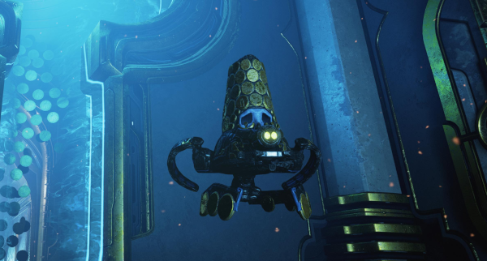
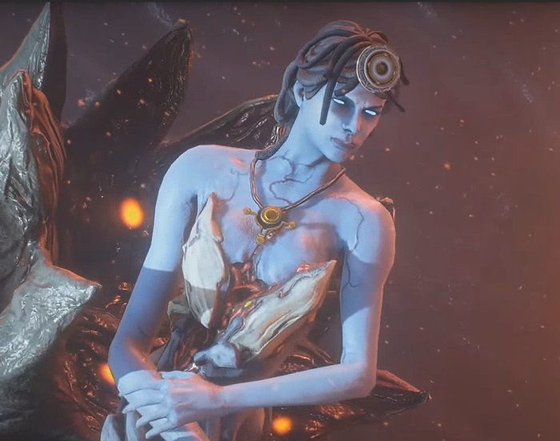
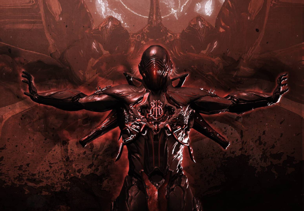
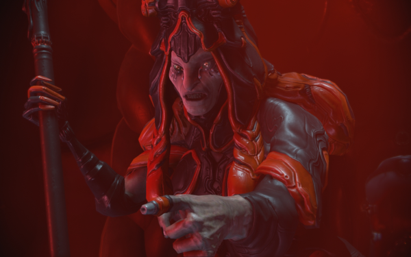
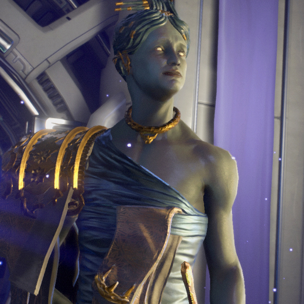
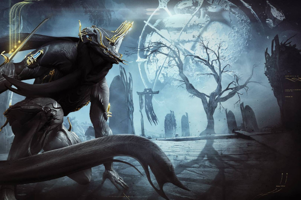
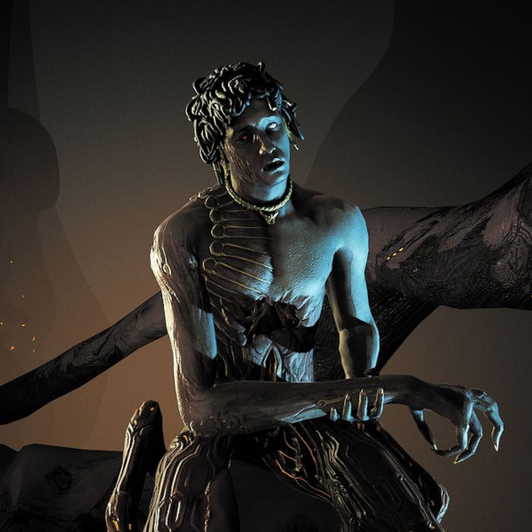
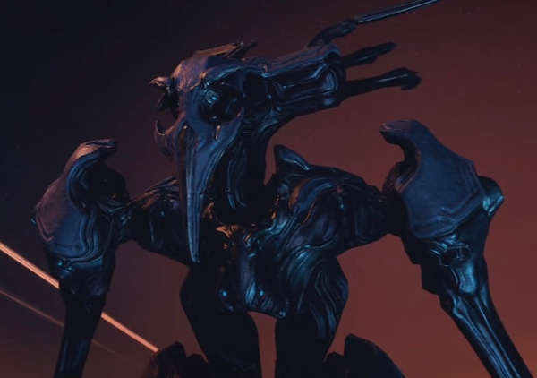

Warframe Story Recap
Awakening
Generations after disappearing, the Tenno are awakened into a solar system at war. With the clone armies of the Grineer empire on one side, and the Corpus merchant cult on the other, they are called to action by their enigmatic guide, the Lotus.

The Teacher
While recovering a mod segment from Corpus scavengers, we are captured by Teshin Dax. Suspicious of the Lotus, he suggests she erased the Tenno's memories of the Old War. After beating him in a duel, he teaches us how to use the mod segment, but the Corpus attack and capture Teshin before our training is complete. Using the newfound power of mods, we board the Corpus ship and rescue him. Privately, Teshin concedes that what the Lotus had the Tenno do to the Orokin was necessary. The Lotus tells him that they will learn the truth in time.

Heart of Deimos
Landing on the infested moon Deimos, we are greeted by Loid, who shares his mechanical body with the erratic Otak. He informs us that the Heart of Deimos, a construct which fuels our Void abilities, is under attack by the Infestation.
Loid introduces us to the bickering and divided Entrati family, caretakers of the Heart who are now partially infested themselves. Mother, the head of the family, sends us to defend the Heart, but we are unsuccessful. With the Heart dead and our Warframe non-functional, the family puts their differences aside and lends us an ancient Necramech, allowing us to return to the Heart and repair it.


Natah
After encountering strange drones on Uranus, we follow their trail to Earth where we find wreckage from the Old War. The Lotus abruptly cuts off transmissions, and Teshin helps us look into what she is hiding.
We return to Uranus where the Grineer are excavating a tomb from the Old War. The Lotus reappears and admits that she knows what is contained within: a Sentient. She asks us to stop the Grineer and seal the tomb, but we are too late. As the Grineer open the tomb, the Sentient calls out for Natah.
The Lotus reveals that Natah is her old name, but insists that it is not who she is now. She sends us to arm a bomb which will re-seal the tomb, at least temporarily. The Sentient speaks again, claiming to be the Lotus's father. He accuses her of betraying him, but says she may be forgiven if she completes her final mission. We finish arming the bomb and seal the tomb.
Back on our ship, the Lotus admits that her final mission was to destroy the Tenno. When Teshin asks why she refused to, she explains that her kind became sterile when travelling to the Origin system, and since she could not have children of her own, she decided to adopt the Tenno. When the Old War was over, she hid them away in the Second Dream.
The Second Dream
Cinematic: The Second Dream Intro (1:22)The Sentient, who we now know as Hunhow, has broken free, despite our attempts to contain him. Hunhow enlists the Stalker to finish what the Lotus could not. He bestows upon him a sword, through which Hunhow speaks, and reveals to him that he knows the true source of the Tenno's power: the Reservoir, hidden in a place Sentients cannot reach.

The Lotus reluctantly accepts the help of Corpus board member Alad V, who helps us track the Stalker into the Void. There we find the location of the Reservoir: Lua, Earth's Moon, apparently hidden away in the Void by the Lotus. To prevent the Stalker from collapsing
the Void and crushing the Moon with it, we phase the Moon back into normal space. We hear the disembodied (ghostly?) voices of Margulis and Ballas, who seem to be romantically involved and arguing about the Tenno. Ballas wants them to be destroyed, but Margulis pleads with him to spare them, that she could heal
them if she was given more time. Ballas says he cannot protect her, and that she must renounce before the Seven.
With the moon out of the Void, Hunhow sends his Sentient fighters to attack the Reservoir directly. As we rush to defend it, we hear the voice of Margulis once again. At her trial, she condemns the Orokin, and is sentenced to death. Reaching the heart of the Reservoir, we find out the truth: the Operator is a human child, controlling the Warframes remotely. The Stalker, seeing our true form, hesitates and leaves. We fight off the Sentients and return to our ship, where the Stalker appears again - this time defeating us and stabbing our Warframe with Hunhow's sword. As the Stalker puts the Operator in a strangehold, their Warframe briefly comes to life, tearing the sword in two and subduing the Stalker. The Lotus carries the unconscious Operator into the Somatic Link, where we awaken and regain some of our memories.
We learn that the Tenno were originally passengers on the Zariman 10-0, a ship which was bound for Tau. The ship was lost to the Void in an accident, and recovered only years later - the sole survivors were the children, now imbued with Void powers which they struggled to control. Fearing these powers, The Orokin sought to destroy the Tenno, but were convinced to spare them by Margulis. Using her research, they created Transference, allowing the Tenno to channel their power through the Warframes.
The War Within
Cinematic: The War Within Intro (0:32)
The Lotus sends us to investigate an anomaly on the Moon, where we find Teshin. Despite him warning us not to interfere, we track him to an asteroid field and discover the hidden fortress of the Grineer Queens. Infiltrating the fortress, we find the Queens in their throne room; the elder Queen is coughing and withering. Teshin appears, seemingly working with the Queens, and subdues us. The elder Queen then produces a Kuva Scepter, with which she penetrates into our mind, and we lose our Warframe connection. We wake on the ship, only to find that our Void powers are gone.

With our powers gone, Ordis's programming compels him to purge the ship, and we escape in the landing craft, leaving us on a snowy mountain. On the mountain, we once again meet Teshin, who forces us through a series of trials to regain both our powers and our suppressed memories from the Zariman accident. We learn that the adults on the ship were driven mad by the Void, and that the children were forced to kill them. Teshin explains that he cannot defy the Queens, as all Dax soldiers are oath-bound to obey their Orokin masters and the wielders of the Kuva Scepter. He also reveals the elder Queen's true motive - not to kill the Operator, but to take over their body using the Kuva within the scepter, a process called Continuity which allowed the Orokin to effectively become immortal.
After regaining our powers, we are able to resist the scepter, and awaken on our ship once more, revealing the events of the mountain to be a dream state in which Teshin put us. Returning to the fortress, we fight the elder Queen in our Operator form and steal her scepter, freeing Teshin from his oath and allowing him to kill her.
We return to the mountain to find Teshin, asking him what to do with the Kuva Scepter. He leaves the choice to us, and we choose to control it, handing the Kuva within to Teshin. The Operator is seemingly possessed(?), and their eyes go dark. A voice speaks through them: Don't forget kiddo, you're nothing without me.
Chains of Harrow
Gameplay: Chains of Harrow Intro (1:16)We receive a strange,
hauntedrecording from the Red Veil, in which we hear the paranoid whispering of a boy named Rell.
Tracking the origin of the message to a ship, we find its crew murdered, and ominous messages on the walls, written in blood. We find and rescue Palladino, Speaker of the Red Veil, who explains that Rell is sacred to the Red Veil, and that her people were driven mad after he left their temple. Claiming that Rell was a Tenno who was cast out by Margulis, she attempts a seance to contact him, but is unsuccessful. The Lotus is skeptical, but agrees to help.
To complete the seance, we seek out manifestations of Rell's Transference energy, and hear his voice warning us of the Man in the Wall
. Palladino claims that this Man in the Wall
is an ancient entity within the Void, one which Rell protected the world against, but the Lotus suggests he is simply experiencing delusions as a result of Void exposure. The Lotus asks if Rell was preserved in cryosleep like the other Tenno, but Palladino explains that they did not have that option. Instead, Rell bound his soul to his Warframe, chaining it beneath the Red Veil's temple.
We go to the temple to return Rell's manifestations and bring him to rest. After breaking the chains that bind his Warframe, Rell's spirit, now calm, asks who will guard against the Man in the Wall. Palladino responds that we - all of the Tenno - will have to, and his spirit fades away. Back on our ship, a mysterious doppelganger greets us: Hey, kiddo.
Apostasy Prologue
In the personal quarters of our ship, a gleaming light transports us to the Moon. As we trace our way back towards the Reservoir, we hear the voices of Ballas and Margulis once again. Margulis urges him to release her from imprisonment, but Ballas says he can do nothing, and begs for her forgiveness. Later, Ballas joins the rest of the Seven in sentencing her to death.
Cutscene: Apostasy Prologue (2:14)Continuing through the Reservoir, we reach the Lotus's chamber. Ballas appears, asking her forgiveness. The Lotus says she is not who he thinks she is, but Ballas replies by saying she is imprisoned, just like Margulis was. With a gesture, he severs the cords on her helmet, which leaves the Lotus seeming confused. Extending his hand, he promises not to abandon her again, and calls her Margulis. The two walk off into a portal.

The Sacrifice
Cinematic: The Sacrifice Intro (1:13)
The Operator receives a vision of Earth, and a Warframe emitting a tortured howl. In the vision, Ballas appears, accompanied by a group of Sentient fighters. He taunts the Warframe - which he calls Umbra - before one of the Sentients annihilates it.

The Operator goes to the site of Umbra's destruction and recovers its scattered pieces. In order to rebuild it, however, more data is required, which sends the Operator off to Lua. They recover a Vitruvian - an Orokin recording device - which belonged to Ballas, and it is revealed that Ballas is the creator of the Warframes. Returning to the ship, the Operator rebuilds Umbra, but as they attempt Transference, they are ejected and pinned against a wall by the rogue Warframe. The Operator attempts Transference once again, and is able to enter one of Umbra's memories. Through the memory, we learn that Umbra was once a Dax soldier, who was turned into a Warframe by Ballas as punishment for spying on him.
Umbra escapes, and we chase him through the solar system, recovering pieces of his memory bit by bit. In the Vitruvian, Ballas reveals that the Warframes were created by injecting human beings with the Helminth - a carefully cultivated strain of the Infestation. He also describes the beginning of the Old War: the Sentients, created by the Orokin to terraform the distant star system of Tau, turned on their masters when they realized that they would bring ruin to it in the same way they had to Earth. Ballas explains his intent to defect to the Sentient side; the recordings in the Vitruvian were meant to pass the secrets of the Warframes and the Tenno to Hunhow - among them, the location of the Reservoir.
In the final memory, Ballas commands the now-infested Umbra to kill his son, Isaah. The Operator reassures him that he is not to blame, and that they will face this memory together. With Umbra at peace, the Operator successfully links minds with him. They return to Earth to find Ballas, and together, are able to resist his commands and stab him. As he lies dying, the Lotus crashes down from the sky in a new, more Sentient-looking form. The Operator is shocked at her new appearance, but she says that this is what she truly is. She flies off with Ballas's body.
Rising Tide
With the Sentient threat growing, we set out to build a Railjack, a spaceship capable of facing them in war. Cephalon Cy helps us reclaim some Old War wreckage, and to find a viable
Cephalon to command the ship; blaming himself for the death of his crew, he believes he is non-viable. After finishing repairs, he acknowledges that there are no other Cephalons capable of commanding a Railjack, and offers to take up the role again.
To power the ship, we track down one final piece: a key for the ship's Reliquary Drive. The power turns on to reveal our mysterious doppelganger sitting on top of the Reliquary Drive. Inside the drive, energy swirls around a giant finger.
Chimera Prologue
Through a vision, we once again find ourselves on Lua. Our doppelganger taunts us, wearing the Lotus's helmet and forcing us to fight shadowy mockeries of her as we return to her chamber.
Gameplay: Chimera Prologue (5:02)
At the end of the chamber, a portal transports us to a Sentient lair where we find Ballas, who has been transformed into a chimerical blend between Orokin and Sentient. He curses the Lotus for deceiving him, calling her identity as a
motherandlovera lie - only the Sentient Natah is real. Constructing a blade called the Paracesis, the Sentient Slayer, he tells the Operator there is only one way to end the war, and offers them the weapon.

Erra
Cinematic: Erra (6:54)We see a vision of the Old War, with the Moon under attack by Sentients. At the heart of the Reservoir, a Sentient named Erra confronts the Lotus, claiming to be her brother and accusing the Orokin of manipulating her to betray her own kind. Calling her Natah, he issues an ultimatum: to choose her true family, or the Tenno. The Lotus rejects her old name, and she and the Tenno strike Erra down.
Back in the present day, we find ourselves on a Sentient ship. Erra is alive, and has Ballas on a leash while discussing war preparations with the Lotus, now Natah. Natah is seemingly confused, believing it to still be the Old War. Ballas confirms that the Orokin are gone, and that only the Tenno remain a threat. With that, Erra instructs her to call the other Sentients home.

The Maker
Inside the Sentient ship, Natah asks Erra about their mother. He tells her that she is dead, urging her to finish the war she started. Natah recalls the moment where she struck down Erra in the Reservoir, believing that she had killed him. Erra insists that her memory is wrong, and that she will need time to heal from what the
Makersdid to her. Natah points to Ballas and asks if he is one of the Makers. Erra suddenly grabs Natah and shoves her against the pedestal behind him, where she is paralyzed in a field of energy. Erra tells her to finish the war, dropping Ballas's leash.
The New War
Under construction.